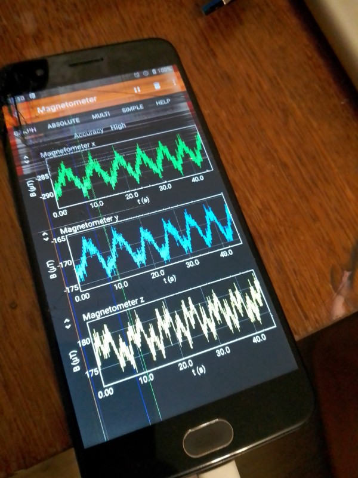
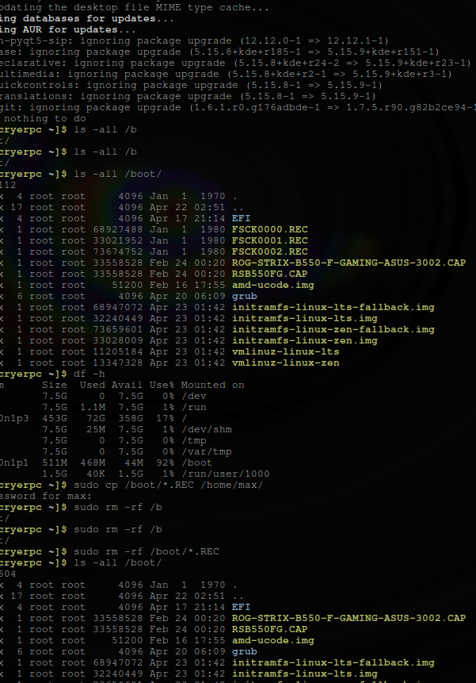

This post is part
Поліція:
Зі статті 42. Заходи поліцейського примусу
1. Поліція під час здійснення повноважень, визначених цим Законом, має право застосовувати такі заходи примусу: 1) фізичний вплив (сила); 2) застосування спеціальних засобів;
Поліцейські та прокуратура часто забеспечують можливіть доступу для своїх типу ʼнадійнихʼ злочинців де вони роками займаються взломами обладнання населення що потрапило у скрутне становище та заробляють на тому багатозначні суми убиваючи при тому власників обладнання та ніяк не відшкодовуючи збитки.
- застосування вогнепальної зброї.
- Фізичний вплив - це застосування будь-якої фізичної сили, а також спеціальних методів боротьби з метою припинення протиправних дій правопорушників.
- Спеціальні засоби як заходи поліцейського примусу - це сукупність пристроїв, пристроїв і предметів, спеціально виготовлених, конструктивно призначених і технічно придатних для захисту людей від ушкоджень різними предметами (у тому числі зброєю), тимчасового (зворотного) ушкодження особи (правопорушника, супротивник), придушення або обмеження волі особи (психологічної чи фізичної) шляхом впливу на неї або на об'єкти, що її оточують, з чітким регламентуванням підстав і правил застосування таких засобів і службових тварин.
- Для виконання своїх повноважень поліцейські можуть застосовувати такі спеціальні засоби:
- гумові та пластмасові кийки;
- електрошокери контактної та контактно-дистанційної дії;
- засоби обмеження рухливості (наручники, сітки для зв'язування тощо);
- засоби, оснащені сльозогінними та подразливими речовинами;
- засоби примусової зупинки руху;
- спеціальні маркувальні та фарбувальні засоби;
- службові собаки та службові коні;
- світлозвукові прилади, гранати та боєприпаси;
9) засоби акустичного та мікрохвильового впливу;
- пристрої, гранати, боєприпаси та дрібні вибухові пристрої для руйнування перешкод і примусового розкриття приміщень;
- пристрої для стрільби патронами, спорядженими несмертельними гумовими або подібними металевими снарядами;
- засоби, обладнані безпечними димоутворюючими препаратами;
- водомети, бронетехніка та інші спеціальні засоби.
- засоби акустичного та мікрохвильового впливу: використовують без відповідних нормативно-правових актів та з метою отримання прибутку.
Миргородці тепер як ~рондроінди~ Хаббарда, але їхню волю зламали мікрохвилі. Сама поліція стверджує, що мікрохвилі та інші діапазони не можуть завдати шкоди людям, смертельно небезпечні рівні фону – це лише ~добре~. При цьому торгівля людьми просто процвітає і залишається нерозслідуваною та безкарною. Можуть довести до повішення або іншого виду самогубства.
Mob Excess Deterrent Using Silent Audio (MEDUSA) для українців, які не хочуть бути частиною онлайн-піратської мафії: ‘Voice-of-God’ weapons Mirgorod Gogola 139 80 EMF:
From Military Neuroscience and the Coming Age of Neurowarfare 2016, Armin Krishnan.
Багато досліджень мікрохвиль, проведених у 1960-х і 1970-х роках, уже вказали на багато потенційних проблем: тривалий вплив мікрохвиль може спричинити генетичні мутації, пухлини мозку та інші види раку, аномалії поведінки (самогубство), зміни в біологічних циклах, ослаблення імунітету. система та зміни в здатності до навчання (Becker, 1990: 214–215; також Brodeur, 1977). Метадослідження RAND 1970 року щодо неврологічних ефектів мікрохвиль припустило: «здається ймовірним, що функції нервової системи, а отже, і поведінка, справді порушуються мікрохвилями низької інтенсивності… дослідження постійно й неодноразово повідомляють, що люди справді демонструють порушення поведінки під час впливу мікрохвиль низької інтенсивності. (МакГрегор, 1970: 8).
Ці висновки не надто відрізняються від деяких останніх досліджень, які також вказують на зміни мозку та поведінки в результаті тривалого впливу ЕМП. Наприклад, дослідження 2000 року стверджує: «Природні та створені людиною електромагнітні поля впливають на настрій і поведінку здорових і хворих людей. Численні дані свідчать про те, що електромагнітні поля впливають на сон» (Шер, 2000). Інше дослідження 2006 року пов’язало навколишні електромагнітні поля з людським настроєм і поведінкою, виявивши значно підвищений рівень самогубств у періоди геомагнітних бур (Berk et al., 2006). У наукових дослідженнях постійний вплив електромагнітного поля пов’язують із «раком, серцевими захворюваннями, порушеннями сну, депресією, самогубством, гнівом, неконтрольованим гнівом, насильством, вбивством, неврологічними захворюваннями та смертю» (Cherry, 2002). Дослідження британської поліцейської радіосистеми TETRA, підготовлене для Федерації поліції Англії та Уельсу, стверджує, що мікрохвилі на певних частотах можуть викликати параною, депресію, самогубство, маніакальне поведінку та сліпоту (Trower, 2001: 30.).
Можливий "контроль людини", або інша спроба створити зброю з ПК, автор - саєнтологічна/поліцейська піратська мафія:
https://drive.google.com/drive/folders/1ruSHXJEPLg2V-gQ6sZ1cd7pbd4Ksjscy?usp=share_link, можливо, я спробую проаналізувати це пізніше. Так як мені не одноразово викликали через опромінення мікрохвилями зупинку сердця, палили мозок, доводили до спроби самогубства та навчились зупиняти моєму організму процесси мислення то пишу я зараз тільки сайт. Cаєнтологічні методи спрямовані на населення наносять тільки шкоду та створюють іллюзію життя без змог до самореалізації при тому самі саєнтологи користуються тільки чистими продуктами та тільки по справжньому задовольняють піраміду своїх потреб. Тут ( Україна ) це переважно радянська коммуністична номенклатура.
Критика наносить шкоду устрою та імені країни та поліція і работорговці після невдач все самовіддано продовжують шукати шлях до створення нової волі у спаленої мікрохвилями жертви.... Можливо просто в Миргороді, Україна, відбуваються такіж самі події які описані в https://www.cs.cmu.edu/~dst/Library/Shelf/wakefield/us-13.html
Освіта яку саєнтолог та коммуніст розуміє як контроль під психофармакологією
Логос чи його частина який вчителі України самі по собі почали використовувати по моді чи з подачі мафії, бо людина має бути тупою - так простіше, розказують на уроках псевдонаукові вигадки та вибірково розповідають корисне, люди в результаті отримують таку що вводить в оману та живуть в світі суперсекретних мафій та не існуючих спецслужб.
https://en.wikipedia.org/wiki/List_of_trademarks_owned_by_the_Church_of_Scientology_and_its_affiliates https://www.scientologynews.org/press-releases/ukraine-tutoring-program.html https://www.prweb.com/releases/churchofscientology/appliedscholastics/prweb10781615.htm
В результаті такого підходу коли ще згвалтовані коммуністами мої батьки віддали мене в 6 школу то матір не змогла зрозуміти що то торговля людьми а я був запевнений що такого явища не існує - типу ООН розповіло. Створюють враженя та впевненість в тому що коли проти вас використовують єлектромагнітну зброю українці, на протязі всього життя, то це нормально так комунікує державна влада коли Держава спілкується тільки правовими актами в паперовому або єлектронному письмовому виді.
Армія
Українські так звані маги, енергетики, радисти вже як 30+ років вивчають на хуліганах та бандитах тонкощі контролю людей, з абсолютно повною підтримкою саєнтології що є світовим лідером з поставок людей в різні країни.
Мк ультра маштабів країни з психотропними препаратами в продуктах що точково поставляються - збройні сили, поліція та розвідка коли використовує засоби контролю та психофарму тільки вбиває населення зброєю массового ураження. Через факти отруеннь, мафію, російські операції з участю українців інколи виникає впевненність в тому що це MK Ultra analog: https://mhgc21.org/en/mhgc21/events/october2018/MHGC-Proceedings-2018/Psycho-Information-Psychotronic-Technologies-for-Overcoming-the-Effects-of-Operative-Combat-Mental-Trauma-Addictive-Disorders-Drug-Resistant-Major-Depression-Anhedonia-and-Alexithymia-First-Report
Використання контрольованої жіночої частини населення для надання послуг по "дрочкі" та створення іллюзії виконання та дотримання прав людини щодо населення та молоді що готують та промивають для армії.
Соціальний статус рабства або будь який інший соціальний статус що відміняє те що ви людина соціально обумовленні явища задля виправдання організованих правопорушеннь, массових вбивств і т.д. - єдина існуюча форма фізичного рабства людини це абсолютна залежність від законів природи та характеристик фізичного простору.
Радіочастотні атаки на плати в умовах відсутності єлектромагнітної безпеки в виді технічних засобів інфраструктури перетворюють плату на пристрій дії на психіку та здоров'я, через то необхідне створення системи сповіщеннь про зміну сигналів та напруг.
Спеціальна відправка додаткового сигналу модульованого сигналами ELF/VLF по лініям живлення жилого району - можливо саме це дозволяє злочинцю розмовляти та одночасно вбивати через побутову техніку.
Записують дітей 1-2 років, молодь що задає питання за компʼютером в вигадану червону армію, злочинці, коммуністи обманом, фальшивими документами та використовуючи шифр зі звичайних слів яким змінюють значення, починають перетворювати людину в раба або готувати з неї співучасника правопорушеннь, співпрацюють з саєнтологією, загалом не на державному рівні крім окремих довготривалих випадків, де військові продають пасинків і інших, хто їх не влаштовує, в рабство онлайн піратам, "панам", саєнтологам, при перебуванні у полоні та під маніпуляціями, я вірю тільки в визначення що надаю далі, тоталітарно-деструктивного культу торговців людьми "церква Саєнтології", та їх інші публічні назви що почерпнуті з іх ідеології та псевдонауки-псевдорелігії, чув від іх старого члена, що типу захищав людство від наркотиків, про те що я не "воспроизвожу", як я зрозумів вони єксперементують пишучи радіочастотні відповіді від просвічування мозку й тіла радіохвилями а потім перевіряють чи відтворюються вони на тій же людині через час, якщо ні чи якщо бажають більшого керування рабом вони опромінюють 24/7 відповідями записаними з себе, з будь якою кількістю учасників.
Саєнтологи, Пірати, Рабовласники на час війни в Україні знайшли новий спосіб утилізації рабів, що стали не зручними або не вигідними, раби це про тих кого вже настільки довго тримали з пошкодженими або постійно тримають з пошкодженими внутрішніми органами ЦНС, що вони вже не розуміють що ними керують або вже не мають жодних варіантів порятунку бо населенню не має діла до дотримання їх прав та законів та воно раде тому що в сусіда пожежа, також часто раб ніколи не знає про величезний пласт технологій радіочастотного контролю, стимуляції, перешкоджання життедіяльності та те що електромагнітні хвилі труять організм. Рабів маніпуляціями оформлюють в добровольчі батальйони де є командири що отримували плату від мафії та винні їй послуги і людину радіо контролем, в перших боях або при нагоді, виводять під вогонь противника. Після отримання травм, при відсутності спостереження, поранених можуть розібрати на органи без їх згоди. Українська мафія оголосила себе новим Інтерполом, а її раби, незважаючи на їхні заслуги, не цінуються, навіть сам президент може їх рухати по радіо Українська мафія оголосила себе новим Інтерполом, а її раби, незважаючи на їхні заслуги, не цінуються, навіть сам президент може їх пересувати по рації, хоча він ствекрджує що не згоден та, що факт, генерал ВС не слухає його. Росcія як завжди, разом з вірними ʼпіратамиʼ, намагається користуватись ситуаціями чому сприяють вказані злочинні групи.
https://en.wikipedia.org/wiki/List_of_trademarks_owned_by_the_Church_of_Scientology_and_its_affiliates https://www.scientologynews.org/press-releases/ukraine-tutoring-program.html https://www.prweb.com/releases/churchofscientology/appliedscholastics/prweb10781615.htm
https://en.wikipedia.org/wiki/Torture_in_Ukraine
https://en.wikipedia.org/wiki/Cruel,_inhuman_or_degrading_treatment
https://en.wikipedia.org/wiki/International_Covenant_on_Civil_and_Political_Rights
https://en.wikipedia.org/wiki/Universal_Declaration_of_Human_Rights
https://en.wikipedia.org/wiki/United_Nations_Convention_Against_Torture
https://uk.wikipedia.org/wiki/%D0%9F%D1%80%D0%B0%D0%B2%D0%B0_%D0%BB%D1%8E%D0%B4%D0%B8%D0%BD%D0%B8_%D0%B2_%D0%A3%D0%BA%D1%80%D0%B0%D1%97%D0%BD%D1%96_(%D0%B4%D0%BE%D0%BF%D0%BE%D0%B2%D1%96%D0%B4%D1%8C)#2014-2018_%D1%80%D0%BE%D0%BA%D0%B8
https://legalaid.gov.ua/novyny/torgivlya-lyudmy-suchasne-rabstvo/